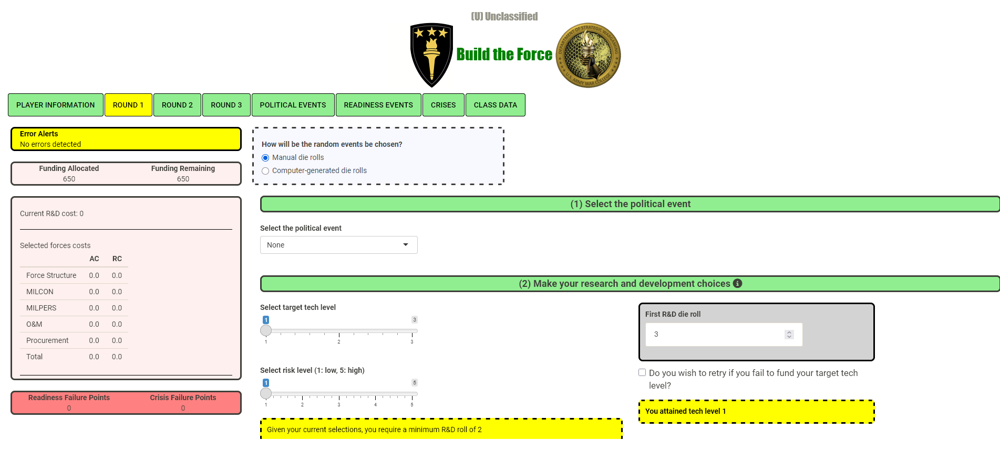
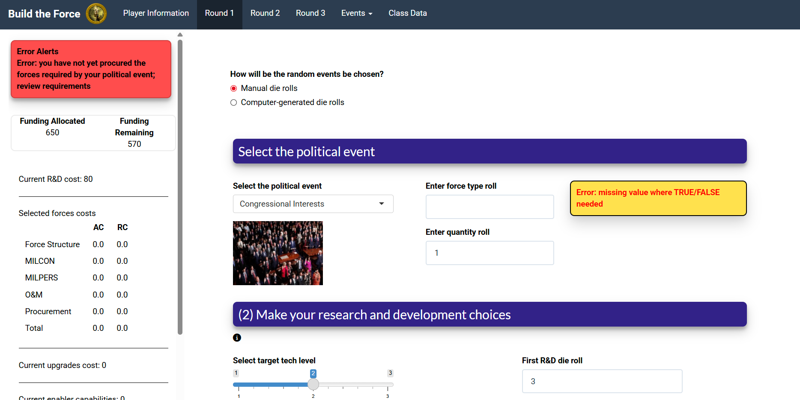

High-level military financial simulation, developed in R-Studio using the Shiny framework.

Dashboard before Redesign
As my first project done for the USAWC Internship, I looked at the dashboard for the simulation "Build The Force" and immediately was drawn to several UI and UX issues within the dashboard. I set out to redesign the dashboard while keeping as much of the back-end original as possible.
Drawing my initial attention were the color scheme and overall template. Because this is a high-level simulation used throughout the college and accessed by students across not only the US Army but also international , it was important that the interface reflected the quailty of resreach and prdoucts crated in the USWAC.
A key usability issue I quickly identified was the use of green to indicate both successful simulation states and error messages. While the text content changed, the color remained the same, making it difficult for users to quickly identify errors without carefully reading the message. This slowed user flow and increased cognitive load. By introducing a clear visual distinction—using green for success and red for errors—the experience was significantly improved when reviewing simulation results.

Error Reporting UI Changes
The primary design issue stemmed from the existing template not conveying a modern, high-quality UI. After exploring available Shiny themes, I selected and modified the Flaty template to better align with the professional and modern interface expected of a high-level simulation. These changes helped elevate the perceived credibility and polish of the platform.
This project marked my first experience with R as well as my initial exposure to the Shiny framework. A significant portion of the project timeline was dedicated to learning the language, understanding its development patterns, and becoming comfortable working within the Shiny environment.
Despite limited communication with my mentor due to a government shutdown, I was able to exceed project expectations. In addition to delivering the required wireframes, I independently learned the framework and fully redesigned the first two pages of the simulation, while preparing the remaining pages for rapid future implementation.